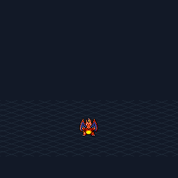
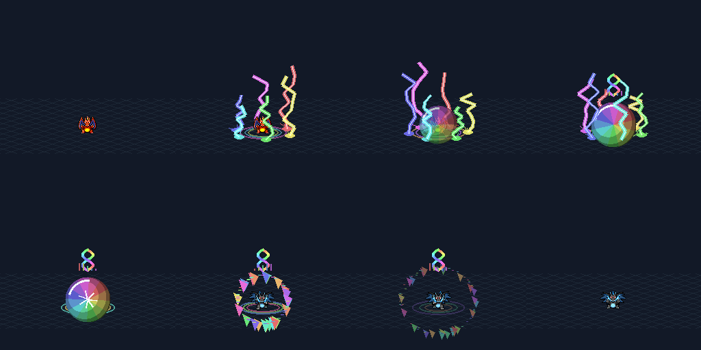
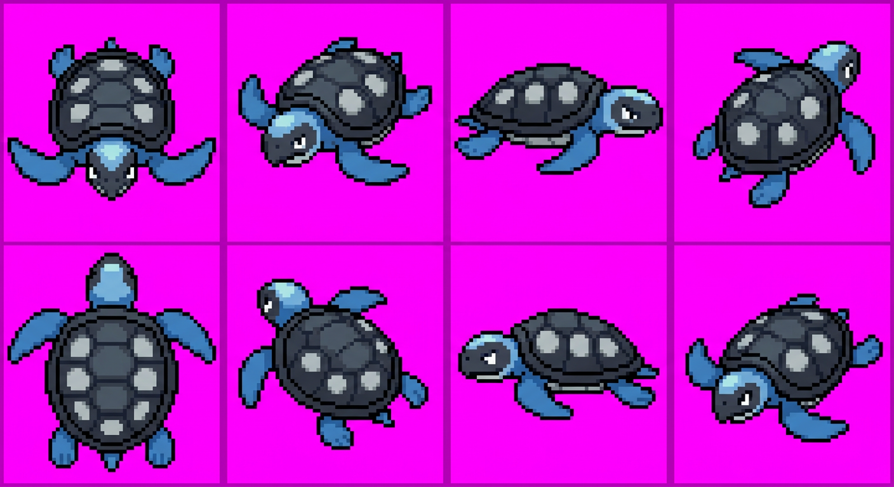

Atelier custom — aperçu visuel, pas validation d’import PMDO ni approbation SpriteCollab.
144 phases · 30 images/s · 6 calques · ancrage d’ombre natif · changement de forme masqué à la phase 66.

Les sprites de démonstration viennent de SpriteCollab, crédits conservés. Éclairs, sphère et fragments custom. Emblème stylisé provisoire : la silhouette officielle reste à corriger. Adaptation mesurée sur Dracaufeu/X, pas encore certifiée pour toutes les espèces.

Nouvelle génération conservée, distincte de la planche perdue. Les directions et la finition pixel doivent être corrigées avant de déclarer le personnage terminé.
